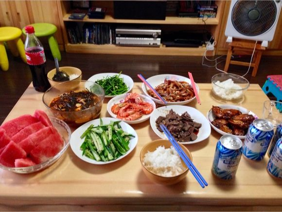
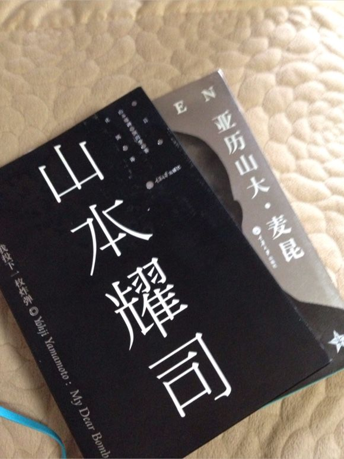
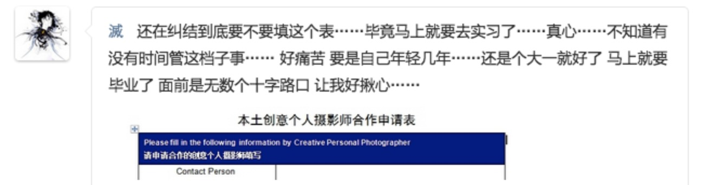

Black
“一个人拥有的越多，距离神就越远。” 上上周去路哥家吃饭，嫂子亲自下的厨。空手去，饱腹归。空闲时间，从书架上拿了山本耀司的自传《My dear bomb》，读了三分之一。路哥见我喜欢，便借给了我，还附带上了一本《亚历山大·麦昆》。


两本都是关于服装设计类，虽我个人不怎么在意服装，但本身所擅长的是摄影，艺术的思想，总是会有想通之处。 然而，我讨厌山本耀司。从看完了《My dear bomb》第一章之后，我就认定。 若是真在现实中见到这么个人物，会有共鸣，会有相通，会有理解，但是绝对不会喜欢。
Black，在巴黎的服装设计中所代表的语言一直都是：悲伤，哀怨，肃穆。 直到山本耀司的出现，赋予了其新的含义：神秘。 一举将黑色多年的定义彻底扭转。 由地底扶摇直上至万里晴空。 似乎有种吐了口恶气的感觉。 同为黑色爱好者，第一次感受到了认同。
山本耀司对黑色的喜爱来源于童年的创伤。 这样的喜爱是浑然天成的。 没有后天世俗所赋予的观念影响。 我喜欢黑色，如此自然又单纯地喜欢着。 对它的爱或许有起因，但是绝对没有理由。 这份爱出自于世界诞生之前的原始法则。 是冥冥中赋予的神明一般的天性。
个人最讨厌的服装是冲锋衣。 张扬，直白。又硬又轻。 没有丁点的维度和纵深，大概和其面料有关。 当然其本身就是功能性的服装，以艺术化的思想去思考，本就是吹毛求兹。 只是单纯的我不喜欢而已。
我所爱的东西都是有深度的，或者说是有维度的。 如同black的神秘、厚重以及距离感。 个人所拍的东西都喜欢习惯性的偏暗，并非刻意而为。 只是单纯的觉得亮了，刺。 黑暗中所蕴藏的细节能带来无与伦比的厚重。 巨大的信息量蕴藏于灰黑之间。 又不会由于过于直白刺伤人眼。 厚重而宽广。 粘滞却舒适。 带有一种摩擦的阻尼，无比精细。 It’s my love
距离感 用日本的说法叫做“间隙”， 用更标准的说法应该叫做“留白”。 平面上的，维度上的，观念上的。 不一定要存在，但是一定要尊重它。 没有留白的作品可以是一口辣椒， 但不尊重留白的作品必然是颗炸弹， “贴着心，挨着胃”。 炸出来的全是一堆呕吐物罢了。
大学末期时，我对着Getty Images的摄影师申请表犹豫了很久。 希望以此为契机决定之后自己该做什么。

矫情么？矫情…… 那时候是真矫情。 还有什么能比学校中无忧无虑又纠结无比的傻逼学生更矫情的呢？ 所幸的是这里未曾有过后悔。 毕竟想要的东西，还是切切实实的捏在了手里。